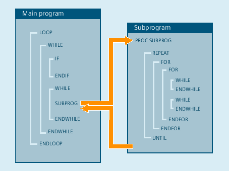

The control processes the NC blocks as standard in the programmed sequence.
This sequence can be variable by programming alternative program blocks and program loops. These check structures are programmed using the key words IF, ELSE, ENDIF, LOOP, FOR, WHILE and REPEAT.
| Notice |
Programming errorCheck structures may only be inserted in the statement section of a program. Definitions in the program header may not be executed conditionally or repeatedly. It is not permissible to superimpose macros on keywords for control structures or on jump destinations. No such check is made when the macro is defined. |
The check structure cannot be used program-wide.
A nesting depth of up to 16 check structures can be set up on each subprogram level.
In interpreter mode (active as standard), it is possible to shorten program processing times more effectively by using program branches than can be obtained with check structures.
There is no difference between program branches and check structures in precompiled cycles.
If only selected blocks are executed within a program loop, the last main run block before the program loop is shown in the current block display.
So that the processed selected blocks are also visible in the current block display, e.g. for diagnostic purposes, the decoding single block SBL2 must be activated.
If, within a program loop, no main run block has been programmed, then the loop is pre-processed until the loop condition is satisfied.
As a consequence, a high level of utilization can occur and this can have a negative impact on the display.
The STOPRE command or a dwell time G04 of 0 seconds can be inserted in the loop as countermeasure.
Blocks with check structure elements cannot be suppressed.
Jumper markers (labels) are not permitted in blocks with check structure elements.
| Note |
It is not generally advisable to use a mixture of check structures and program branches. |
For external programs with control structures, the start of the loop must be within the reload memory. Otherwise the jump destination is not found and the program aborts and alarm 14000 is output.
| Note |
To be able to execute external programs without restrictions with regard to control structures, it is recommended to use the function "Execution from External Storage (EES)" instead of the function "Execution from external source". |
Check structures are processed interpretively. When a loop end is detected, a search is made for the loop beginning, allowing for the check structures found in the process. For this reason, the block structure of a program is not checked completely in interpreter mode.
A check can be made to ensure that check structures are nested correctly when cycles are preprocessed.
See also:
Conditional statement and branch (IF, ELSE, ENDIF)
Continuous program loop (LOOP, ENDLOOP)
Count loop (FOR ... TO ..., ENDFOR)
Program loop with condition at start of loop (WHILE, ENDWHILE)
Program loop with condition at the end of the loop (REPEAT, UNTIL)
Program example with nested check structures